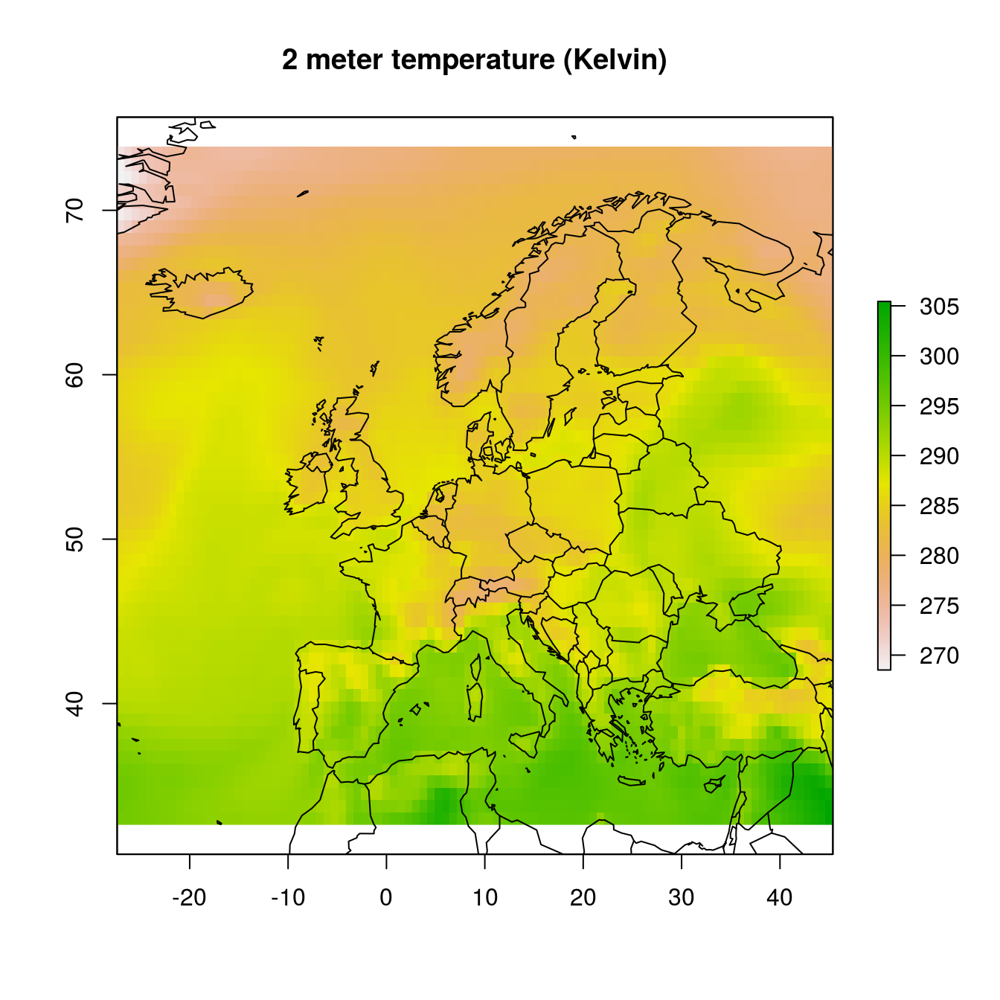

ecmwfr
Programmatic interface to the ‘ECMWF’ web API services. Allows for easy downloads of ECMWF public data.
Setup
Before starting save your provided ECMWF key to your local keychain. In this example I use my R development account with the key hidden using Xs. The package does not allow you to use your key inline in scripts to limit security issues when sharing scripts on github or otherwise.
# set a key to the keychain
wf_set_key(user = "khrdev@outlook.com",
key = "XXXXXXXXXXXXXXXXXXXXXX",
service = "webapi")
# you can retrieve the key using
wf_get_key(user = "khrdev@outlook.com")
# the output should be the key you provided
# in this case represented by the fake X string.
# "XXXXXXXXXXXXXXXXXXXXXX"Alternatively, you can call the wf_set_key() function with only the service argument. The function will then redirect you to the correct login page where you can find your login credentials, which can be copied and pasted into the command prompt.
Before you can download any data you have to make sure to accept the terms and conditions here: https://apps.ecmwf.int/datasets/licences/general/.
ECMWF Data Requests (Public Data Sets)
To download data use the wf_request() function, together with your email and a request string syntax as documented. Instead of json formatting the function uses a simple R list for all the arguments.
The conversion from a MARS or python based query to the list format can be automated if you use the RStudio based Addin. By selecting and using Addin -> Mars to list (or ‘Python to list’) you dynamically convert queries copied from either ECMWF or CDS based services.

# this is an example of a request
request <- list(stream = "oper",
levtype = "sfc",
param = "167.128",
dataset = "interim",
step = "0",
grid = "0.75/0.75",
time = "00",
date = "2014-07-01/to/2014-07-02",
type = "an",
class = "ei",
area = "73.5/-27/33/45",
format = "netcdf",
target = "tmp.nc")
# an example download using fw_request()
# using the above request list()
ncfile <- wf_request(user = "khrdev@outlook.com",
request = request,
transfer = TRUE,
path = tempdir(),
verbose = FALSE)The download operation might take a while. A progress indicator will keep you informed on the status of your request. The download will expire after a default time out of one hour. You will be informed of where to track your job request on the ECMWF website, and provided with a download url which can be used with the wt_transfer() funtion to download the data on a later moment. Keep in mind that you can only have 3 active downloads and 20 job items queued!
If the download is successful you can visualize one layer in the retrieved stack of temperatures at 2 meters using the plotting routine below.
s <- raster::stack(ncfile)
print(s)
#> class : RasterStack
#> dimensions : 55, 97, 5335, 1 (nrow, ncol, ncell, nlayers)
#> resolution : 0.75, 0.75 (x, y)
#> extent : -27.375, 45.375, 32.625, 73.875 (xmin, xmax, ymin, ymax)
#> crs : +proj=longlat +datum=WGS84 +ellps=WGS84 +towgs84=0,0,0
#> names : layer
#> min values : 268.5063
#> max values : 305.4419
raster::plot(s[[1]], main = "2 meter temperature (Kelvin)")
maps::map("world", add = TRUE)
ECMWF mars Requests
The ecmwfr package (wf_request()) also allows to submit mars requests. Note that this requires a member state login or a commercial user account!
The ecmwfr syntax for mars requests is identical to the ones to the public ECMWF API except that one has to specify dataset = "mars". The example below downloads the 2 meter temperature forecast (parameter 167) from the 00 UTC ECMWF HRES run January 22, 2019, only 12 ahead forecast (step). A NetCDF file with a regular 0.125 x 0.125 degree horizontal resolution for a custom area in northern Europe will be downloaded (area). Note that the grid specification is required if format = "netcdf" as grib to NetCDF conversion is only able for regular longitude-latitude grids.
# this is an example of a request
request <- list("dataset" = "mars",
"class" = "od",
"date" = "2019-01-22",
"expver" = "1",
"levtype" = "sfc",
"param" = "167.128",
"step" = "0",
"stream" = "oper",
"time" = "12",
"type" = "fc",
"grid" = "0.125/0.125",
"area" = "50/0/30/15",
"format" = "netcdf",
"target" = "mars-data.nc")
# Submit mars request and wait for netcdf file
wf_request(user = "khrdev@outlook.com",
transfer = TRUE,
path = "~",
request = request,
verbose = FALSE)